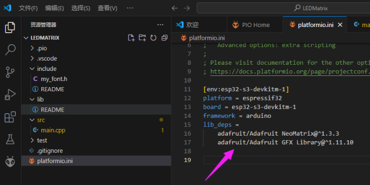
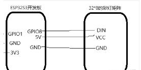
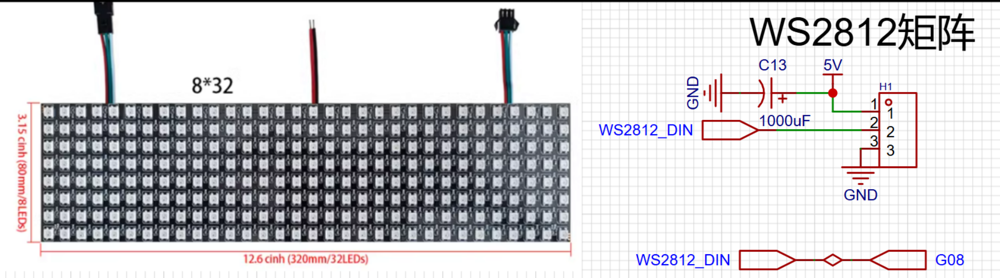
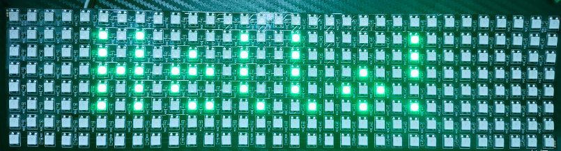
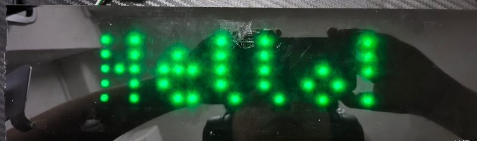
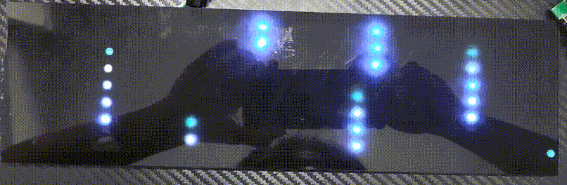
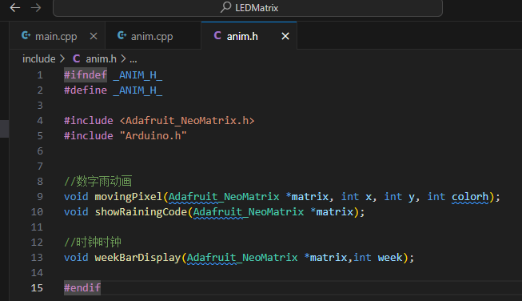
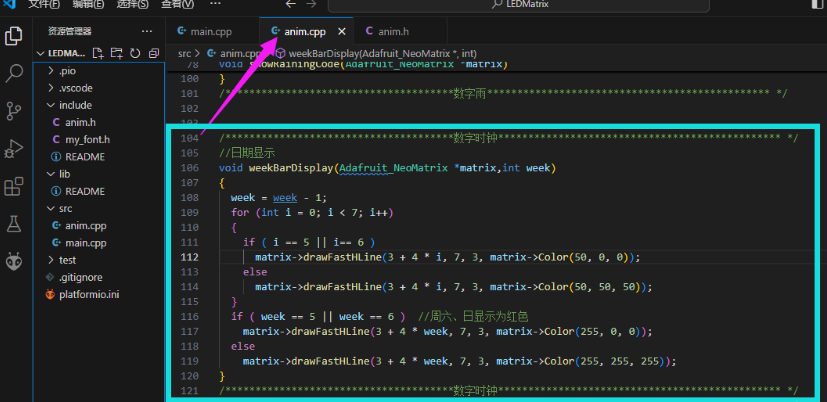
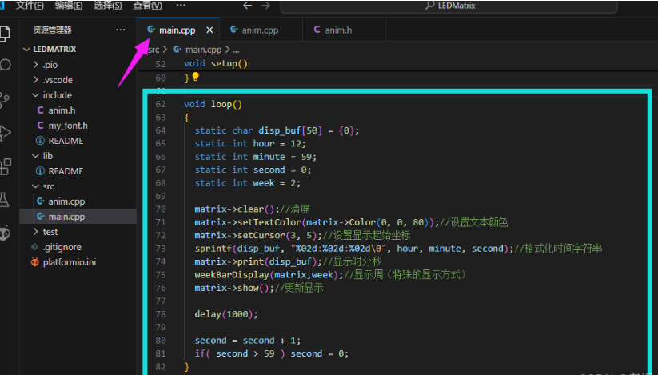
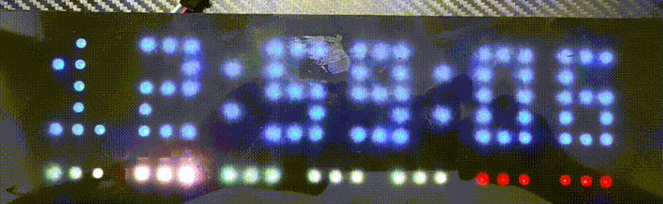

彩灯驱动
Update history
| Date | Version | Author | Update content |
|---|---|---|---|
| 2024-12-05 | 1.0.1 | 老怪鸽 | 更新了基本文档 |
硬件准备
WS2812矩阵彩灯

购买地址：WS2812B全彩软像素屏8X8 8X32 16X16幻彩5V显示可编程像素软屏
ESP32S3开发板

购买地址：立创·ESP32S3R8N8 开发板
工程创建
在VSCode中打开PlatformIO扩展创建名为LEDMatrix的 Espressif ESP32-S3-DevKitM-1 工程。
关于详细图文创建工程的过程请参考👉RTC时钟驱动章节的工程创建小节。
安装驱动库
最底层的驱动，需要分别安装两个库：
搜索
Adafruit NeoMatrix，安装来自Adafruit的Adafruit NeoMatrix库。搜索
Adafruit GFX Library，安装来自Adafruit的Adafruit GFX Library库。
将它们都安装到我们的工程当中。
关于详细图文安装驱动库的过程请参考👉RTC时钟驱动章节的安装驱动库小节。
都安装完成之后，打开platformio.ini文件，可以看到已经安装上了两个驱动库。

编辑代码
首先导入我们的字库，这里我提供给大家一个ascii的字库。在工程下的include文件夹下新建一个 my_font.h文件。
接下来往 my_font.h 文件写入我们的字模代码：
直接复制以下代码到你的文件下
#include "Arduino.h"
#include "Adafruit_GFX.h"
const uint8_t PicopixelBitmaps[] PROGMEM = {
0xE8, 0xB4, 0x57, 0xD5, 0xF5, 0x00, 0x4E, 0x3E, 0x80, 0xA5, 0x4A, 0x4A,
0x5A, 0x50, 0x80, 0x6A, 0x40, 0x95, 0x80, 0xAA, 0x80, 0x5D, 0x00, 0x60,
0xE0, 0x80, 0x25, 0x48, 0xF6, 0xDE, 0x59, 0x2E, 0xE7, 0xCE, 0xE7, 0x9E,
0xB7, 0x92, 0xF3, 0x9E, 0xF3, 0xDE, 0xE4, 0x92, 0xF7, 0xDE, 0xF7, 0x9E,
0xA0, 0x46, 0x64, 0xE3, 0x80, 0x98, 0xC5, 0x04, 0x56, 0xC6, 0x57, 0xDA,
0xD7, 0x5C, 0x72, 0x46, 0xD6, 0xDC, 0xF3, 0xCE, 0xF3, 0x48, 0x72, 0xD4,
0xB7, 0xDA, 0xF8, 0x24, 0xD4, 0xBB, 0x5A, 0x92, 0x4E, 0x8E, 0xEB, 0x58,
0x80, 0x9D, 0xB9, 0x90, 0x56, 0xD4, 0xD7, 0x48, 0x56, 0xD4, 0x40, 0xD7,
0x5A, 0x71, 0x1C, 0xE9, 0x24, 0xB6, 0xD4, 0xB6, 0xA4, 0x8C, 0x6B, 0x55,
0x00, 0xB5, 0x5A, 0xB5, 0x24, 0xE5, 0x4E, 0xEA, 0xC0, 0x91, 0x12, 0xD5,
0xC0, 0x54, 0xF0, 0x90, 0xC7, 0xF0, 0x93, 0x5E, 0x71, 0x80, 0x25, 0xDE,
0x5E, 0x30, 0x6E, 0x80, 0x77, 0x9C, 0x93, 0x5A, 0xB8, 0x45, 0x60, 0x92,
0xEA, 0xAA, 0x40, 0xD5, 0x6A, 0xD6, 0x80, 0x55, 0x00, 0xD7, 0x40, 0x75,
0x90, 0xE8, 0x71, 0xE0, 0xBA, 0x40, 0xB5, 0x80, 0xB5, 0x00, 0x8D, 0x54,
0xAA, 0x80, 0xAC, 0xE0, 0xE5, 0x70, 0x6A, 0x26, 0xFC, 0xC8, 0xAC, 0x5A};
const GFXglyph PicopixelGlyphs[] PROGMEM = { {0, 0, 0, 2, 0, 1}, // 0x20 ' '
{0, 1, 5, 2, 0, -4}, // 0x21 '!'
{1, 3, 2, 4, 0, -4}, // 0x22 '"'
{2, 5, 5, 6, 0, -4}, // 0x23 '#'
{6, 3, 6, 4, 0, -4}, // 0x24 '$'
{9, 3, 5, 4, 0, -4}, // 0x25 '%'
{11, 4, 5, 5, 0, -4}, // 0x26 '&'
{14, 1, 2, 2, 0, -4}, // 0x27 '''
{15, 2, 5, 3, 0, -4}, // 0x28 '('
{17, 2, 5, 3, 0, -4}, // 0x29 ')'
{19, 3, 3, 4, 0, -3}, // 0x2A '*'
{21, 3, 3, 4, 0, -3}, // 0x2B '+'
{23, 2, 2, 3, 0, 0}, // 0x2C ','
{24, 3, 1, 4, 0, -2}, // 0x2D '-'
{25, 1, 1, 2, 0, 0}, // 0x2E '.'
{26, 3, 5, 4, 0, -4}, // 0x2F '/'
{28, 3, 5, 4, 0, -4}, // 0x30 '0'
{30, 3, 5, 4, 0, -4}, // 0x31 '1'
{32, 3, 5, 4, 0, -4}, // 0x32 '2'
{34, 3, 5, 4, 0, -4}, // 0x33 '3'
{36, 3, 5, 4, 0, -4}, // 0x34 '4'
{38, 3, 5, 4, 0, -4}, // 0x35 '5'
{40, 3, 5, 4, 0, -4}, // 0x36 '6'
{42, 3, 5, 4, 0, -4}, // 0x37 '7'
{44, 3, 5, 4, 0, -4}, // 0x38 '8'
{46, 3, 5, 4, 0, -4}, // 0x39 '9'
{48, 1, 3, 2, 0, -3}, // 0x3A ':'
{49, 2, 4, 3, 0, -3}, // 0x3B ';'
{50, 2, 3, 3, 0, -3}, // 0x3C '<'
{51, 3, 3, 4, 0, -3}, // 0x3D '='
{53, 2, 3, 3, 0, -3}, // 0x3E '>'
{54, 3, 5, 4, 0, -4}, // 0x3F '?'
{56, 3, 5, 4, 0, -4}, // 0x40 '@'
{58, 3, 5, 4, 0, -4}, // 0x41 'A'
{60, 3, 5, 4, 0, -4}, // 0x42 'B'
{62, 3, 5, 4, 0, -4}, // 0x43 'C'
{64, 3, 5, 4, 0, -4}, // 0x44 'D'
{66, 3, 5, 4, 0, -4}, // 0x45 'E'
{68, 3, 5, 4, 0, -4}, // 0x46 'F'
{70, 3, 5, 4, 0, -4}, // 0x47 'G'
{72, 3, 5, 4, 0, -4}, // 0x48 'H'
{74, 1, 5, 2, 0, -4}, // 0x49 'I'
{75, 3, 5, 4, 0, -4}, // 0x4A 'J'
{77, 3, 5, 4, 0, -4}, // 0x4B 'K'
{79, 3, 5, 4, 0, -4}, // 0x4C 'L'
{81, 5, 5, 6, 0, -4}, // 0x4D 'M'
{85, 4, 5, 5, 0, -4}, // 0x4E 'N'
{88, 3, 5, 4, 0, -4}, // 0x4F 'O'
{90, 3, 5, 4, 0, -4}, // 0x50 'P'
{92, 3, 6, 4, 0, -4}, // 0x51 'Q'
{95, 3, 5, 4, 0, -4}, // 0x52 'R'
{97, 3, 5, 4, 0, -4}, // 0x53 'S'
{99, 3, 5, 4, 0, -4}, // 0x54 'T'
{101, 3, 5, 4, 0, -4}, // 0x55 'U'
{103, 3, 5, 4, 0, -4}, // 0x56 'V'
{105, 5, 5, 6, 0, -4}, // 0x57 'W'
{109, 3, 5, 4, 0, -4}, // 0x58 'X'
{111, 3, 5, 4, 0, -4}, // 0x59 'Y'
{113, 3, 5, 4, 0, -4}, // 0x5A 'Z'
{115, 2, 5, 3, 0, -4}, // 0x5B '['
{117, 3, 5, 4, 0, -4}, // 0x5C '\'
{119, 2, 5, 3, 0, -4}, // 0x5D ']'
{121, 3, 2, 4, 0, -4}, // 0x5E '^'
{122, 4, 1, 4, 0, 1}, // 0x5F '_'
{123, 2, 2, 3, 0, -4}, // 0x60 '`'
{124, 3, 4, 4, 0, -3}, // 0x61 'a'
{126, 3, 5, 4, 0, -4}, // 0x62 'b'
{128, 3, 3, 4, 0, -2}, // 0x63 'c'
{130, 3, 5, 4, 0, -4}, // 0x64 'd'
{132, 3, 4, 4, 0, -3}, // 0x65 'e'
{134, 2, 5, 3, 0, -4}, // 0x66 'f'
{136, 3, 5, 4, 0, -3}, // 0x67 'g'
{138, 3, 5, 4, 0, -4}, // 0x68 'h'
{140, 1, 5, 2, 0, -4}, // 0x69 'i'
{141, 2, 6, 3, 0, -4}, // 0x6A 'j'
{143, 3, 5, 4, 0, -4}, // 0x6B 'k'
{145, 2, 5, 3, 0, -4}, // 0x6C 'l'
{147, 5, 3, 6, 0, -2}, // 0x6D 'm'
{149, 3, 3, 4, 0, -2}, // 0x6E 'n'
{151, 3, 3, 4, 0, -2}, // 0x6F 'o'
{153, 3, 4, 4, 0, -2}, // 0x70 'p'
{155, 3, 4, 4, 0, -2}, // 0x71 'q'
{157, 2, 3, 3, 0, -2}, // 0x72 'r'
{158, 3, 4, 4, 0, -3}, // 0x73 's'
{160, 2, 5, 3, 0, -4}, // 0x74 't'
{162, 3, 3, 4, 0, -2}, // 0x75 'u'
{164, 3, 3, 4, 0, -2}, // 0x76 'v'
{166, 5, 3, 6, 0, -2}, // 0x77 'w'
{168, 3, 3, 4, 0, -2}, // 0x78 'x'
{170, 3, 4, 4, 0, -2}, // 0x79 'y'
{172, 3, 4, 4, 0, -3}, // 0x7A 'z'
{174, 3, 5, 4, 0, -4}, // 0x7B '{'
{176, 1, 6, 2, 0, -4}, // 0x7C '|'
{177, 3, 5, 4, 0, -4}, // 0x7D '}'
{179, 4, 2, 5, 0, -3} }; // 0x7E '~'
const GFXfont Picopixel PROGMEM = {(uint8_t *)PicopixelBitmaps,
(GFXglyph *)PicopixelGlyphs, 0x20, 0x7E, 7};
字模准备完毕，我们可以点亮彩灯矩阵，并且显示ascii的字符了！
打开工程下的src文件夹下的main.cpp。
输入以下代码：
#include <Arduino.h>
#include <Adafruit_NeoMatrix.h> //点亮LED矩阵需要的库
#include "my_font.h" //引用文字库头文件
//像素阵列定义
#define kMatrixWidth 32 //宽度
#define kMatrixHeight 8 //高度
#define BRIGHTNESS 10 //默认亮度 0-255
#define BRIGHTNESS_INTERVAL 30 //亮度调节间隔
#define LED_PIN 8 //像素阵列引脚
Adafruit_NeoMatrix *matrix; //LED矩阵类指针
//像素矩阵初始化
void InitLED_Matrix(void)
{
//设置像素矩阵的方向以及排列方式
matrix = new Adafruit_NeoMatrix(32, 8, LED_PIN, NEO_MATRIX_TOP + NEO_MATRIX_LEFT+
NEO_MATRIX_COLUMNS + NEO_MATRIX_ZIGZAG,
NEO_GRB + NEO_KHZ800);
matrix->setTextWrap(false); //设置文字是否自动换行
matrix->setFont(&Picopixel); //设置字体
matrix->clear(); //清除当前显示内容
matrix->setBrightness(BRIGHTNESS);//设置亮度
}
//显示信息
void ShowMessage(Adafruit_NeoMatrix *matrix, char *message, int len, uint32_t color)
{
//清除上一次的显示内容
matrix->clear();
//设置文本颜色
matrix->setTextColor(color);
//如果显示的内容过长，或者过小
if (len < 1 || len > 8)
return;
//设置鼠标光标的位置用以确定在哪里显示文字
//X轴自动居中
matrix->setCursor(1 + (8 - len) * 2, 5);
//将显示的内容输出至缓存中
matrix->print(message);
//显示缓存中的内容
matrix->show();
}
void setup()
{
//初始化LED矩阵显示
InitLED_Matrix();
//显示 6 个字符，显示内容：Hello!，显示颜色：绿色(R,G,B)
ShowMessage(matrix, "Hello!", 6, matrix->Color(0, 255, 0));
}
void loop()
{
delay(1000);
}
硬件连接

这里其实我是做了电路设计的，但是模块电路都是一样的。

代码验证
代码编写完成之后，将ESP32S3开发板接入电脑下载代码。然后观察彩灯矩阵的现象。
实物显示如下：
裸屏显示

使用黑色亚克力面板+白纸格挡光线显示
叠层从上到下是这样的：黑色亚克力面板 -> 白纸 -> LED矩阵

示例一：显示下雨特效
文件创建分类
在工程下的
include文件夹下新建一个anim.h文件。在工程下的
src文件夹下新建一个anim.cpp文件。
代码编写
在 anim.h 文件中编写以下代码：
#ifndef _ANIM_H_
#define _ANIM_H_
#include <Adafruit_NeoMatrix.h>
#include "Arduino.h"
//数字雨动画
void movingPixel(Adafruit_NeoMatrix *matrix, int x, int y, int colorh);
void showRainingCode(Adafruit_NeoMatrix *matrix);
#endif
在 anim.cpp 文件中编写以下代码：
#include "anim.h"
//数字雨
int columnIndex[8];
int stepIndex[8];
int glow[8];
bool Running[8]={false, false, false, false, false, false, false, false};
int stepsTillNext[8] = {0, 6, 2, 11, 4, 10, 7, 1};
uint16_t hsv2rgb(Adafruit_NeoMatrix *matrix, uint16_t hue, uint8_t saturation, uint8_t value)
{
uint8_t red = 0;
uint8_t green = 0;
uint8_t blue = 0;
uint16_t hi = (hue / 60) % 6;
uint16_t F = 100 * hue / 60 - 100 * hi;
uint16_t P = value * (100 - saturation) / 100;
uint16_t Q = value * (10000 - F * saturation) / 10000;
uint16_t T = value * (10000 - saturation * (100 - F)) / 10000;
switch (hi)
{
case 0:
red = value;
green = T;
blue = P;
break;
case 1:
red = Q;
green = value;
blue = P;
break;
case 2:
red = P;
green = value;
blue = T;
break;
case 3:
red = P;
green = Q;
blue = value;
break;
case 4:
red = T;
green = P;
blue = value;
break;
case 5:
red = value;
green = P;
blue = Q;
break;
default:
return matrix->Color(255, 0, 0);
}
red = red * 255 / 100;
green = green * 255 / 100;
blue = blue * 255 / 100;
return matrix->Color(red, green, blue);
}
//数字雨专用的移动像素特效
void movingPixel(Adafruit_NeoMatrix *matrix, int x, int y, int colorh)
{
int pixel = y;
matrix->drawPixel(x, pixel, hsv2rgb(matrix, colorh, 100, 100));
if(pixel-1 >= 0){ matrix->drawPixel(x, pixel-1, hsv2rgb(matrix, colorh, 80, 80 ));}
if(pixel-2 >= 0){ matrix->drawPixel(x, pixel-2, hsv2rgb(matrix, colorh, 70, 70 ));}
if(pixel-3 >= 0){ matrix->drawPixel(x, pixel-3, hsv2rgb(matrix, colorh, 45, 45 ));}
if(pixel-4 >= 0){ matrix->drawPixel(x, pixel-4, hsv2rgb(matrix, colorh, 25, 25 ));}
if(pixel-5 >= 0){ matrix->drawPixel(x, pixel-5, hsv2rgb(matrix, colorh, 10, 10 ));}
if(pixel-6 >= 0){ matrix->drawPixel(x, pixel-6, matrix->Color(0, 0, 0));}
}
//显示数字雨特效
void showRainingCode(Adafruit_NeoMatrix *matrix)
{
for(int i=0; i<8; i++)
{
if(stepIndex[i] > stepsTillNext[i])
{
Running[i] = true;
stepsTillNext[i] = 13; // 进行数组初始化
columnIndex[i] = random((i*4), ((i+1)*4));
glow[i] = random(0, 2); //随机背景置灰值
stepIndex[i] = 0;
}
if(Running[i] == true)
{
movingPixel(matrix, columnIndex[i], stepIndex[i], 240);
if(stepIndex[i] == 13)
{
Running[i] = false;
}
}
stepIndex[i] += 1;
}
}
最后在main.cpp中编写如果代码：
#include <Arduino.h>
#include <Adafruit_NeoMatrix.h> //点亮LED矩阵需要的库
#include "my_font.h" //引用文字库头文件
#include "anim.h" //引用我们自定义的动画头文件
//像素阵列定义
#define kMatrixWidth 32 //宽度
#define kMatrixHeight 8 //高度
#define BRIGHTNESS 50 //默认亮度 0-255
#define BRIGHTNESS_INTERVAL 30 //亮度调节间隔
#define LED_PIN 8 //像素阵列引脚
Adafruit_NeoMatrix *matrix; //LED矩阵类指针
//像素矩阵初始化
void InitLED_Matrix(void)
{
//设置像素矩阵的方向以及排列方式
matrix = new Adafruit_NeoMatrix(32, 8, LED_PIN, NEO_MATRIX_TOP + NEO_MATRIX_LEFT+
NEO_MATRIX_COLUMNS + NEO_MATRIX_ZIGZAG,
NEO_GRB + NEO_KHZ800);
matrix->setTextWrap(false); //设置文字是否自动换行
matrix->setFont(&Picopixel); //设置字体
matrix->clear(); //清除当前显示内容
matrix->setBrightness(BRIGHTNESS);//设置亮度
}
//显示信息
void ShowMessage(Adafruit_NeoMatrix *matrix, char *message, int len, uint32_t color)
{
//清除上一次的显示内容
matrix->clear();
//设置文本颜色
matrix->setTextColor(color);
//如果显示的内容过长，或者过小
if (len < 1 || len > 8)
return;
//设置鼠标光标的位置用以确定在哪里显示文字
//X轴自动居中
matrix->setCursor(1 + (8 - len) * 2, 5);
//将显示的内容输出至缓存中
matrix->print(message);
//显示缓存中的内容
matrix->show();
}
void setup()
{
//初始化LED矩阵显示
InitLED_Matrix();
//显示 6 个字符，显示内容：Hello!，显示颜色：绿色(R,G,B)
ShowMessage(matrix, "Hello!", 6, matrix->Color(0, 255, 0));
delay(2000);
}
void loop()
{
//清除之前的显示内容
matrix->clear();
//设置雨滴特效
showRainingCode(matrix);
//显示内容
matrix->show();
//控制雨滴下落速度
delay(250);
}
实物效果
烧录步骤不再描述，这里直接提供实物效果图。
使用黑色亚克力面板+白纸格挡光线显示
叠层从上到下是这样的：黑色亚克力面板 -> 白纸 -> LED矩阵

示例二：显示时钟并走时
并不是真的显示真实时间，这里只是显示个模型，方便我们后面搞好时钟模块的驱动后使用
文件创建分类
继续继用上一章节的 anim.h 和 anim.cpp，位置和文件名都不变。
编写代码
在anim.h中补充如下：
//时钟时钟
void weekBarDisplay(Adafruit_NeoMatrix *matrix,int week);
代码页面截图：

在anim.cpp 文件的末尾补充如下代码：
/**************************************数字时钟*********************************************** */
//日期显示
void weekBarDisplay(Adafruit_NeoMatrix *matrix,int week)
{
week = week - 1;
for (int i = 0; i < 7; i++)
{
if ( i == 5 || i== 6 )
matrix->drawFastHLine(3 + 4 * i, 7, 3, matrix->Color(50, 0, 0));
else
matrix->drawFastHLine(3 + 4 * i, 7, 3, matrix->Color(50, 50, 50));
}
if ( week == 5 || week == 6 ) //周六、日显示为红色
matrix->drawFastHLine(3 + 4 * week, 7, 3, matrix->Color(255, 0, 0));
else
matrix->drawFastHLine(3 + 4 * week, 7, 3, matrix->Color(255, 255, 255));
}
/**************************************数字时钟*********************************************** */

在main.cpp 文件中，将loop() 函数中更新为如下代码：
void loop()
{
static char disp_buf[50] = {0};
static int hour = 12;
static int minute = 59;
static int second = 0;
static int week = 2;
matrix->clear();//清屏
matrix->setTextColor(matrix->Color(0, 0, 80));//设置文本颜色
matrix->setCursor(3, 5);//设置显示起始坐标
sprintf(disp_buf, "%02d:%02d:%02d\0", hour, minute, second);//格式化时间字符串
matrix->print(disp_buf);//显示时分秒
weekBarDisplay(matrix,week);//显示周（特殊的显示方式）
matrix->show();//更新显示
delay(1000);
second = second + 1;
if( second > 59 ) second = 0;
}
代码截图：

代码中时钟跑时部分是随便写的，这里就是写了一个显示时间的UI框架，并不是真实时间的跑时。
实物验证
烧录步骤不再描述，这里直接提供实物效果图。

下方显示的周数，当前是周二，所以第二个高亮
说明：如果你根据代码操作运行不起来，可以下载👉例程看看